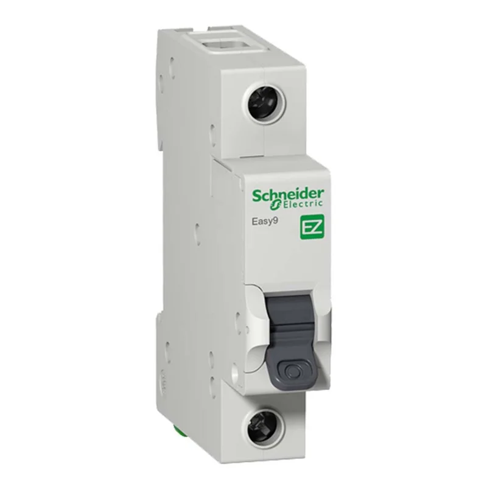

Os disjuntores são dispositivos eletrônicos de proteção, que podem ser vistos na grande maioria das vezes em instalações de casas e até mesmo em indústrias. Eles operam normalmente no estado fechado (conduzindo energia), mas, caso ocorra uma alteração anormal no circuito elétrico (como uma sobrecarga ou curto-circuito), sua função é abrir automaticamente para interromper a corrente e garantir a proteção do ambiente.

Conhecidos também como unipolares ou disjuntores monofásicos, eles são normalmente utilizados em circuitos de tomadas e iluminação com sistema fase-neutro. Nesses circuitos, eles ligam e desligam apenas a fase, já que o neutro aterrado não representa perigo. A grande maioria desse tipo de disjuntor é do tipo termomagnético, possuindo apenas um terminal de entrada e um de saída para o fio fase, protegendo o circuito de duas formas

Conhecidos também como disjuntores duplos ou bifásicos, eles são usados com frequência em chuveiros elétricos e outros circuitos alimentados por duas fases, as quais precisam ser interrompidas simultaneamente. A grande maioria dos disjuntores bipolares é do tipo termomagnético.